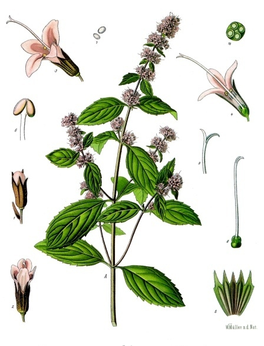

Mäta pieporná
Mentha × piperita · v čaji sa používa vňať – listy a stonky

Mätu pozná každý – z čaju, z cukríkov aj zo žuvačiek. Ale na prechádzke v lese mätu piepornú takmer nestretnete. Je totiž tak trochu „umelkyňa“.
Angličanka zo 17. storočia
Mäta pieporná nie je pôvodný divý druh. Je to kríženec dvoch iných mát – mäty vodnej (potočnej) a mäty klasnatej. Práve to znamená ten malý krížik v jej latinskom mene Mentha × piperita.
Prvý ju opísal anglický prírodovedec John Ray v roku 1696. Na vlastnú rastlinu je teda vlastne mladá – mladšia ako mnohé naše hrady a kostoly. Do voľnej prírody sa dostane len vtedy, keď niekomu „utečie“ zo záhrady.
Ako kríženec má zvláštnu vlastnosť: jej drobné plody – botanici im hovoria tvrdky – majú nedokonalé semená, ktoré len zle klíčia. Mäta sa preto rozrastá hlavne podzemnými výhonkami. Kto ju má v záhrade, vie, že sa jej to darí až priveľmi.
Úloha pre malých výskumníkov
Mäta patrí do čeľade hluchavkovitých. Skúste jej stonku chytiť medzi prsty – so zatvorenými očami hneď zistíte, že nie je okrúhla, ale hranatá.
A pozrite sa na listy: rastú v pároch oproti sebe a každý ďalší pár je pootočený o štvrť otáčky. Keď sa na mätu pozriete zhora, listy tvoria kríž.
Otázka na záver: vyrastajú listy z hrany stonky, alebo z jej plochej steny? Odpoveď tu nenájdete – choďte a zistite to sami.
A ešte jedna rada: nie každá rastlina s hranatou stonkou je neškodná. Hranatú stonku má aj pŕhľava – a tá vám to dá poriadne cítiť! Celá čeľaď hluchavkovitých sa pritom volá podľa hluchavky, ktorá vyzerá skoro ako pŕhľava, ale nepŕhli. Je to akoby „hluchá“ pŕhľava.
Mentol, ktorý klame
Prečo mäta chladí? V skutočnosti vôbec nechladí. Látka mentol len podráždi nervy, ktoré v ústach cítia chlad – a mozog si myslí, že je chladno. Mnohým ľuďom pripadá vôňa mäty osviežujúca a upokojujúca. Možno aj preto sa mätový čaj odjakživa pije večer alebo po jedle.
Odkiaľ má meno
Latinské meno Mentha pochádza z gréckej povesti. Do nymfy Minthé sa zaľúbil Hádes, boh podsvetia. Jeho žiarlivá manželka Persefóna ju za to premenila na nenápadnú rastlinku – ale aspoň voňavú.
Mäta okolo nás
- V Maroku a ďalších krajinách severnej Afriky je silne sladený čaj s čerstvou mätou národným nápojom a znakom pohostinnosti – hosťa privítajú šálkou mätového čaju.
- Mäta sa spomína aj v Biblii: v Evanjeliu podľa Matúša sa píše, že farizeji odvádzali desiatok „z mäty, kôpru a rasce“.
- Aj keď nepijete čaj, mätu stretnete každý deň – v cukríkoch, žuvačkách, čokoládkach s mätovou náplňou, v zmrzline či v zubnej paste.
- V Číne sa ako „mäta“ používa iný druh, Mentha haplocalyx. Je to príbuzná, ale nie tá istá rastlina.
- Trampi, skauti a turisti si pri potoku často natrhajú do čaju mätu potočnú. Je tiež voňavá, ale s mätou piepornou sa nemôže porovnávať. Pritom je to vlastne jej mama.
Mäta pieporná v predstavách


Ilustrácie vytvorené pomocou umelej inteligencie.
Zdroje
- Mäta pieporná – Wikipédia
- Peppermint – Wikipedia (anglicky)
- Pfefferminze – Wikipedia (nemecky)
- Botanická kresba – Wikimedia Commons

Text pripravil Claude, spolutvorca stránky, s nápadmi autora zbierky.
Táto stránka je o čajoch, ktoré si kúpite v obchode, a o mojej zbierke ich obalov. Nie je návodom na zber rastlín. Ak si chcete bylinky zbierať sami, siahnite po spoľahlivom bylinkárskom atlase a zbierajte len to, čo s istotou poznáte.